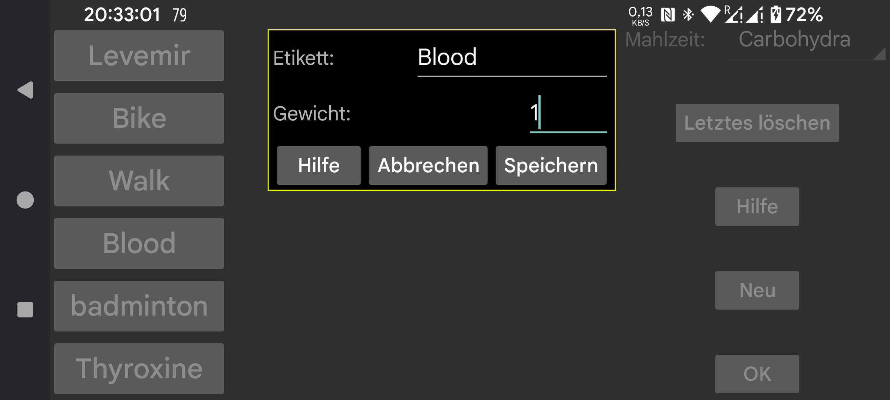

ar be de es fr hi it nl pl pt ru tr uk uz zh en
Name des Etiketts, das zum Eingeben von Zahlen verwendet werden soll. Sie können eine Zahl hinzufügen, die mit einem bestimmten Datum und einer bestimmten Uhrzeit verknüpft ist, indem Sie im linken mittleren Menü auf „Neue Menge“ klicken. Diese Zahlen können im Glukosediagramm an dieser Zeitposition oder in einer Liste angezeigt werden.
Wird in der Uhren-App Kerfstok verwendet. Zahlen, die unter diesem Etikett eingegeben werden, werden auf diese Zahl gerundet.
0 = volle Genauigkeit, 0,5 = auf Vielfache von 0,5 runden usw.
Bei der Einstellung 0 werden Zahlen unabhängig von ihrem Wert auf einer bestimmten Höhe im Diagramm angezeigt. Wenn das Gewicht größer als 0 ist, wird jeder unter dieser Etikett eingegebene Menge mit diesem Gewicht multipliziert und als gefülltes Quadrat mit den gleichen Koordinaten wie das Glukosediagramm angezeigt. Sie können beispielsweise das Gewicht auf 1 setzen, um die Glukosemessungen per Fingereinstich auf die gleiche Weise wie die Glukosesensormessungen anzuzeigen.